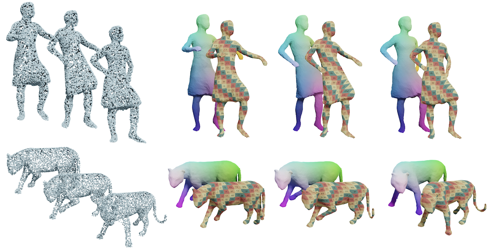
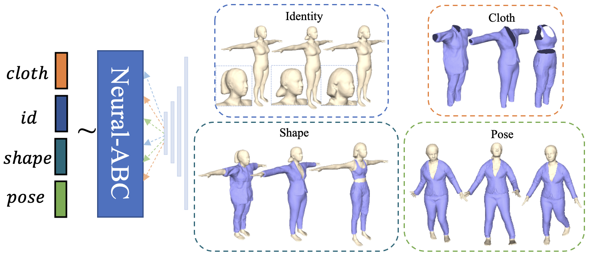
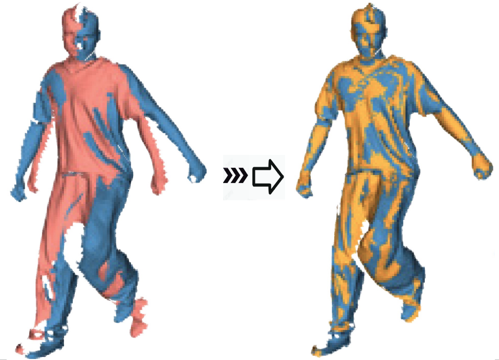
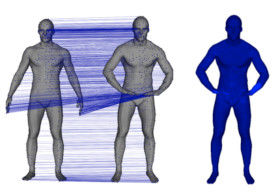

Yuxin Yao | 要宇馨Post-doctoral Researcher
Department of Computer Science |
|
About Me
Yuxin Yao is currently a post-doctoral researcher at City University of Hong Kong, supervised by Prof. Junhui Hou. Before that, she received her PhD degree from University of Science and Technology of China (USTC) in 2023, under the supervision of Prof. Juyong Zhang, and the bachelor degree of Mathematical from University of Electronic Science and Technology of China in 2018. Her research interests include 3D vision, Graphics, 3D registration and reconstruction.
Research
|  |
DynoSurf: Neural Deformation-based Temporally Consistent Dynamic Surface Reconstruction
Yuxin Yao, Siyu Ren, Junhui Hou, Zhi Deng, Juyong Zhang, Wenping Wang European Conference on Computer Vision (ECCV), 2024. |
||
|  |
Neural-ABC: Neural Parametric Models for Articulated Body with Clothes
Honghu Chen, Yuxin Yao, Juyong Zhang IEEE Transactions on Visualization and Computer Graphics (TVCG), 2024. |
||
|  |
Fast and Robust Non-Rigid Registration Using Accelerated Majorization-Minimization
Yuxin Yao, Bailin Deng, Weiwei Xu, Juyong Zhang IEEE Transactions on Pattern Analysis and Machine Intelligence (TPAMI), 2023. |
||

|
A Survey of Non-Rigid 3D Registration
Bailin Deng, Yuxin Yao, Roberto M. Dyke, Juyong Zhang Computer Graphics Forum (Eurographics State-of-the-Art Reports), Vol.41, No.2, pages 559-589, 2022.
[Project Page]
[Paper]
|
||

|
Fast and Robust Iterative Closest Point
Juyong Zhang, Yuxin Yao, Bailin Deng IEEE Transactions on Pattern Analysis and Machine Intelligence (TPAMI), Vol.44, Issue 7, pages 3450-3466, 2022. |
||

|
A Robust Loss for Point Cloud Registration
Deng Zhi, Yuxin Yao, Bailin Deng, Juyong Zhang IEEE International Conference on Computer Vision (ICCV), 2021. |
||
|  |
Quasi-Newton Solver for Robust Non-Rigid Registration
Yuxin Yao, Bailin Deng, Weiwei Xu, Juyong Zhang, IEEE/CVF Conference on Computer Vision and Pattern Recognition (CVPR, Oral Presentation), 2020. |
||

|
Anderson Acceleration for Nonconvex ADMM Based on Douglas-Rachford Splitting
Wenqing Ouyang, Yue Peng, Yuxin Yao, Juyong Zhang, Bailin Deng Computer Graphics Forum (Symposium on Geometry Processing), 39(5), 2020. |
||